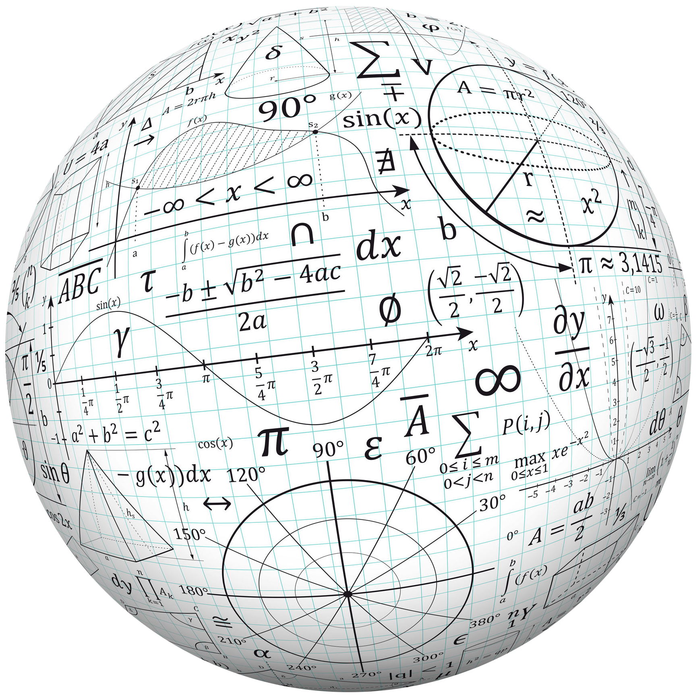

С 7-го класса средней школы появляется предмет алгебра. Это такая наука, которая требует серьезного изучения. В этой статье приведены простыми словами объяснения, что такое алгебра и зачем она нужна человеку.
Алгебра – это не отдельная наука, а раздел математики. В ней изучаются действия над величинами. То есть каждому школьнику предстоит проводить различные вычисления, преобразования над числами, переменными. Что такое алгебра, если выразиться простыми словами? Представьте себе арифметику, где даны, например, дроби. Эти дроби нужно сложить. Как это сделать, подсказывает определенное правило: приводим их к общему знаменателю, затем нужно сделать расчет.
Также можно привести пример с простыми задачками про собранные и съеденные яблоки (сколько было и сколько осталось). Но алгебра более сложная, чем арифметика.
Рассмотрим, какие задачи решает алгебра:
Этот раздел математики достаточно сложен. Еще с древних времен известные ученые создавали законы, формулы, теоремы, основываясь на жизненном опыте. Недаром математика считается не просто точной наукой, но и мистической.
Алгебра – это поиск решения и анализ той или иной задачи. Допустим, нужно раскрыть скобки в некоем уравнении, затем решить его. Находим величину неизвестной переменной «икс» (Х). Чтобы проверить, правильно ли решена задача, следует решить это уравнение другим способом: не раскрывать скобки, а решить каждое выражение по отдельности. Таким образом находятся корни уравнения, которые должны иметь те же значения, что и при раскрытии скобок.
Так зачем нужна алгебра? Она учит логическому мышлению, требует тренировки памяти, внимательности. Люди с аналитическим складом ума чаще всего прекрасно разбираются в науке. Алгебра нужна тем, кто собирается поступать в технические, экономические вузы.
В жизни она тоже может пригодиться. Например, чтобы определиться в магазине, по какой цене и в какой объеме выгоднее брать товар. Нужно произвести мысленно подсчеты. Кроме того, зачастую нам приходится считать проценты и переводить их в числа. Допустим, подоходный налог 13%.
Какую сумму денег выдадут на руки, можно легко просчитать.
Мы с вами разобрались, что такое алгебра, и чем она может быть полезна. Теперь рассмотрим, какие же науки не обходятся без нее. Вспомним, что она является не самостоятельной дисциплиной, а всего лишь разделом математики. А математика подразделяется на арифметику (изучается в младших классах общеобразовательной школы) и на геометрию (изучают в средней школе). Почему они взаимосвязаны? Дело в том, что арифметика – это очень простые вычисления: сложение, вычитание, умножение и деление. Это все пригодится в дальнейшем обучении.
Что касается геометрии, то она изучает пространственные структуры. То есть речь идет о различных вычислениях у фигур, линий, в пространственных телах.
Без алгебры не могут существовать:
Даже некоторые гуманитарные науки не обходятся без нее, например социология.
Алгебра может быть использована для решения различных задач, например, для определения скорости и направления движения объектов, для расчета максимальной производительности в компьютерах.
По ссылке ниже вы можете скачать сборник задач по Алгебре.
К сожалению, алгебра – это очень сложный предмет, впрочем, как и математика в целом. Поэтому нужно серьезно отнестись к учебе. С первых дней ее изучения (арифметика начинается в 1 классе) нужно начинать осваивать каждый урок, запоминать наизусть все, что необходимо. Если что-то пропустить, то в будущем могут быть проблема с изучением нового материала.
Математика – это своего рода цепочка из звеньев: начинается с простого, а заканчивается сложным. И так постепенно. Поэтому важно не пропускать ни один материал. Лучше несколько раз проверить себя, закрепить изученную тему.
Далее при изучении алгебры следует постоянно тренировать память. Нужно запоминать различные правила и свойства. Например, надо усвоить, что при раскрытии скобок учитываются знаки: "минус на минус дает плюс", а "плюс на минус всегда дает минус" (при умножении). Таким образом, ученик решит задачу правильно, и у него не возникнет проблем в будущем, особенно если он планирует пойти в технический университет.
Вы узнали, что такое алгебра. Желаем вам успешного познания этого сложного раздела математики.